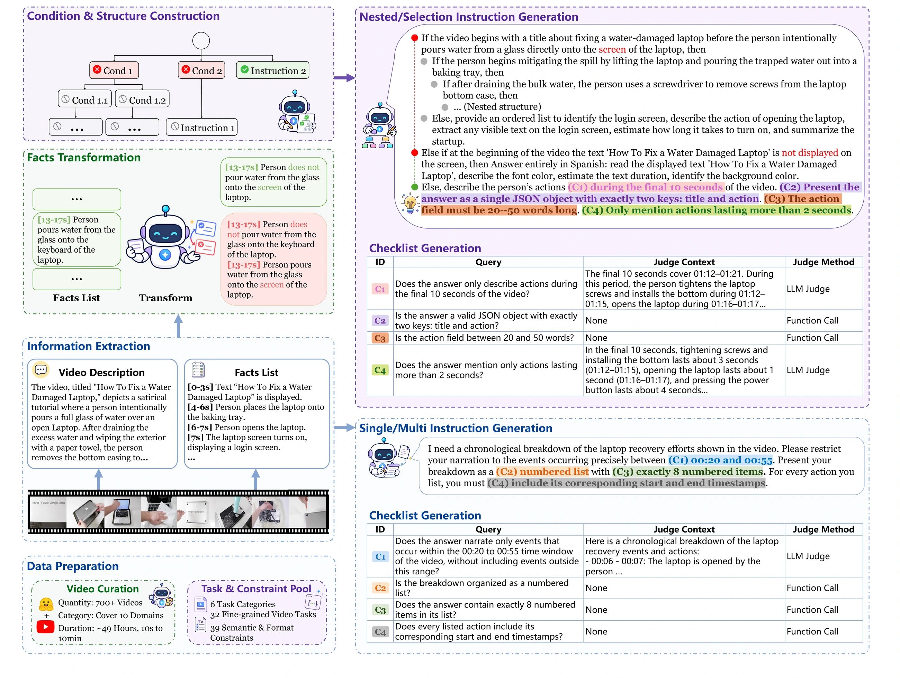
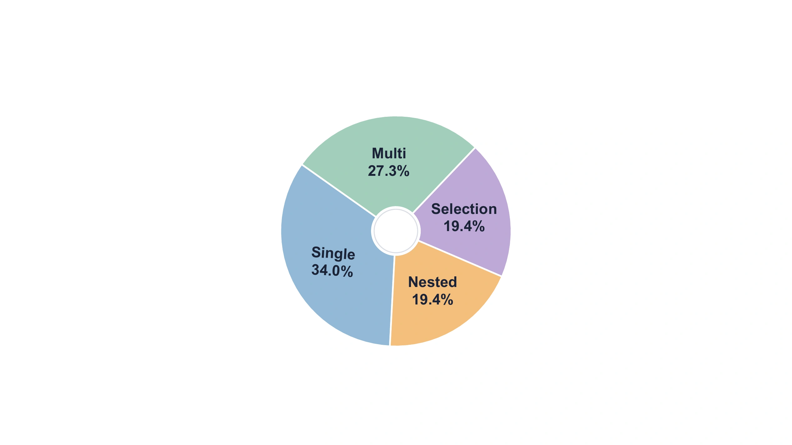
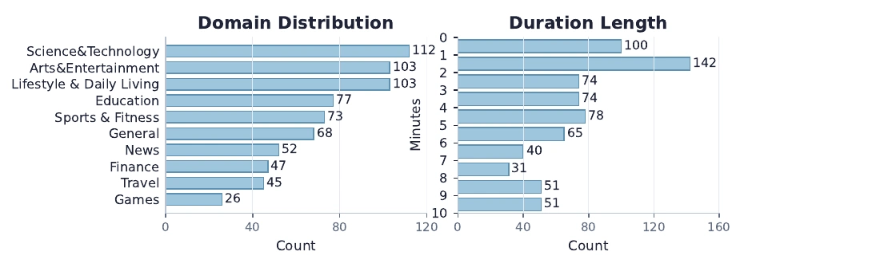
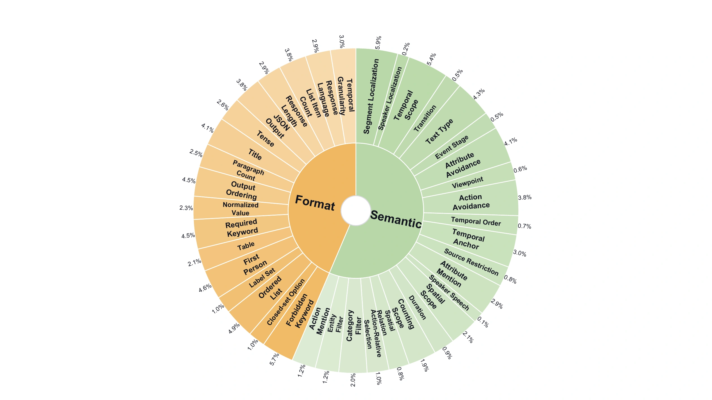
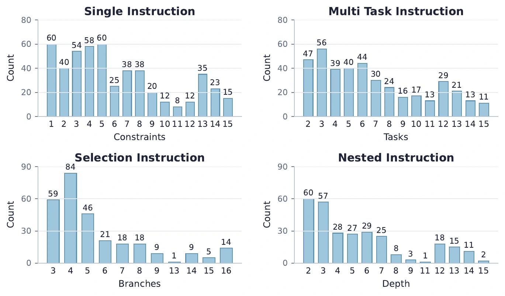
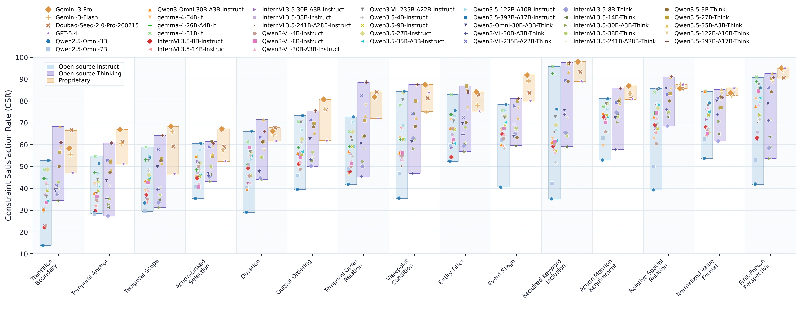
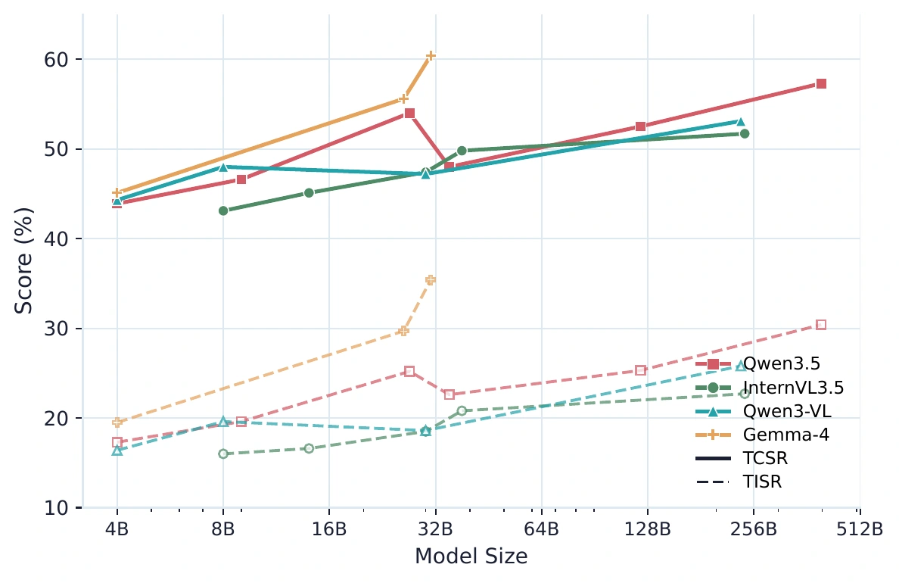
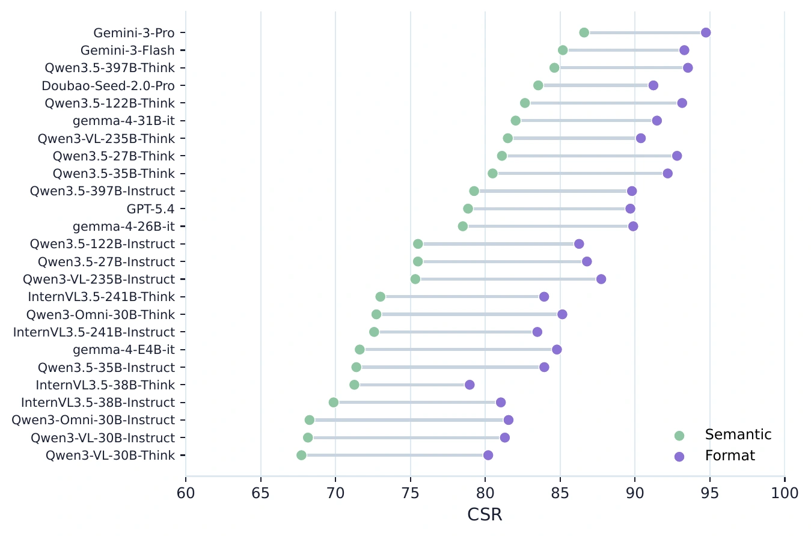
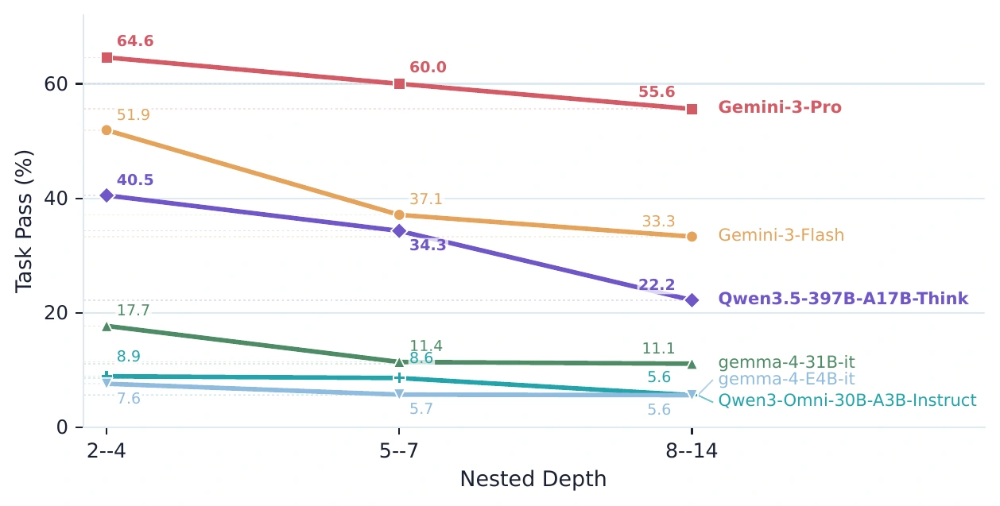
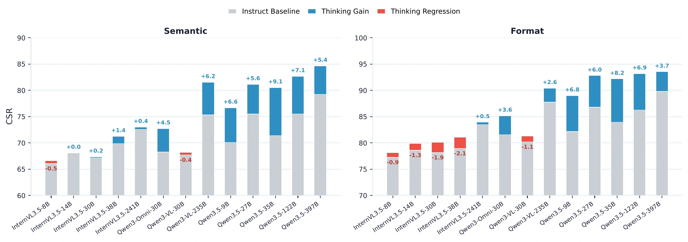

Video-IFBench
Evaluating Instruction Following of Multimodal LLMs
in Video Understanding Scenarios

Overview of Video-IFBench. Video-IFBench evaluates instruction following in video understanding through Single, Multi, Selection, and Nested instructions. Its construction pipeline combines video annotation, task and constraint sampling, complex instruction generation, checklist construction, programmatic processing, and human verification. Extensive evaluation shows that current MLLMs still struggle with strict satisfaction, especially as constraints accumulate or conditional structures require evidence-grounded branch selection.
Dataset Statistics


Instruction and constraint statistics


Main Results
| Model | Single | Multi | Selection | Nested | Overall | |||||
|---|---|---|---|---|---|---|---|---|---|---|
| TCSR | TISR | TCSR | TISR | TCSR | TISR | TCSR | TISR | TCSR | TISR | |
| Proprietary Models | ||||||||||
| Gemini-3-Pro | 79.6 | 52.3 | 88.6 | 58.8 | 68.5 | 59.2 | 53.7 | 46 | 76.5 | 54.5 |
| Gemini-3-Flash | 76.7 | 49.2 | 87.6 | 56.4 | 63.9 | 54.8 | 39.9 | 30.7 | 72.2 | 49.5 |
| Doubao-Seed-2.0-Pro-260215 | 76.7 | 44.6 | 87.1 | 51.1 | 46.5 | 38.2 | 17.8 | 14.4 | 65.7 | 40.8 |
| GPT-5.4 | 72.8 | 34.7 | 82.4 | 43.2 | 21.1 | 16.9 | 12.1 | 7.6 | 57.4 | 30.0 |
| Open-source Models (Instruct) | ||||||||||
| Qwen2.5-Omni-3B | 35.2 | 11.6 | 34.0 | 8.6 | 7.7 | 5.4 | 6.5 | 4.5 | 25.8 | 8.6 |
| Qwen2.5-Omni-7B | 46.3 | 16.6 | 48.6 | 14.9 | 15.6 | 11.5 | 8.9 | 5.5 | 36.0 | 13.5 |
| Qwen3-Omni-30B-A3B-Instruct | 57.9 | 21.4 | 62.9 | 22.9 | 17.2 | 14.3 | 6.1 | 4.1 | 44.3 | 18.0 |
| Gemma-4-E4B-it | 56.8 | 22.1 | 67.5 | 29.9 | 11.9 | 8.2 | 6.0 | 3.8 | 45.1 | 19.5 |
| Gemma-4-26B-A4B-it | 71.6 | 35.7 | 79.2 | 41.1 | 22.7 | 19.4 | 7.1 | 4.5 | 55.6 | 29.7 |
| Gemma-4-31B-it | 75.8 | 43.0 | 82.1 | 44.4 | 29.9 | 25.4 | 13.8 | 10.0 | 60.4 | 35.4 |
| InternVL3.5-8B-Instruct | 53.4 | 19.1 | 63.6 | 21.8 | 16.3 | 10.1 | 7.6 | 3.5 | 43.1 | 16.0 |
| InternVL3.5-14B-Instruct | 56.2 | 19.1 | 66.3 | 22.6 | 18.6 | 12.5 | 6.2 | 3.5 | 45.1 | 16.6 |
| InternVL3.5-30B-A3B-Instruct | 57.0 | 19.2 | 65.9 | 24.8 | 21.2 | 13.8 | 16.2 | 9.6 | 47.4 | 18.5 |
| InternVL3.5-38B-Instruct | 61.0 | 24.5 | 71.8 | 27.1 | 18.5 | 12.7 | 14.6 | 8.4 | 49.8 | 20.8 |
| InternVL3.5-241B-A28B-Instruct | 64.5 | 24.6 | 75.3 | 32.2 | 16.0 | 12.3 | 13.6 | 10.4 | 51.7 | 22.7 |
| Qwen3-VL-4B-Instruct | 55.6 | 19.9 | 65.6 | 20.9 | 15.1 | 11.4 | 8.7 | 5.1 | 44.3 | 16.4 |
| Qwen3-VL-8B-Instruct | 60.1 | 23.5 | 68.9 | 24.7 | 17.8 | 13.0 | 13.5 | 8.5 | 48.0 | 19.6 |
| Qwen3-VL-30B-A3B-Instruct | 56.8 | 19.9 | 70.4 | 25.4 | 17.0 | 12.3 | 13.6 | 9.5 | 47.2 | 18.6 |
| Qwen3-VL-235B-A22B-Instruct | 67.5 | 31.9 | 78.0 | 35.1 | 19.5 | 14.5 | 8.6 | 6.0 | 53.1 | 25.8 |
| Qwen3.5-4B-Instruct | 54.6 | 22.0 | 65.5 | 23.3 | 15.2 | 8.8 | 7.9 | 4.0 | 43.9 | 17.3 |
| Qwen3.5-9B-Instruct | 57.8 | 22.6 | 70.0 | 27.3 | 16.2 | 12.4 | 8.1 | 5.0 | 46.6 | 19.6 |
| Qwen3.5-27B-Instruct | 66.7 | 29.1 | 77.8 | 33.8 | 23.0 | 18.0 | 11.7 | 6.9 | 54.0 | 25.2 |
| Qwen3.5-35B-A3B-Instruct | 56.7 | 25.7 | 75.2 | 33.4 | 17.5 | 12.4 | 7.5 | 5.0 | 48.0 | 22.6 |
| Qwen3.5-122B-A10B-Instruct | 62.7 | 29.1 | 79.8 | 36.8 | 20.3 | 14.5 | 9.5 | 5.5 | 52.5 | 25.3 |
| Qwen3.5-397B-A17B-Instruct | 70.1 | 36.5 | 83.2 | 40.8 | 24.3 | 18.9 | 12.2 | 7.9 | 57.3 | 30.4 |
| Open-source Models (Thinking) | ||||||||||
| Qwen3-Omni-30B-A3B-Think | 66.6 | 30.0 | 75.1 | 36.8 | 24.8 | 18.5 | 10.1 | 5.5 | 53.1 | 26.2 |
| Qwen3-VL-30B-A3B-Think | 60.7 | 23.9 | 68.2 | 31.3 | 22.2 | 17.1 | 8.5 | 5.5 | 47.9 | 22.0 |
| Qwen3-VL-235B-A22B-Think | 74.7 | 37.7 | 84.4 | 45.0 | 31.4 | 24.9 | 14.1 | 10.3 | 60.9 | 33.5 |
| InternVL3.5-8B-Think | 53.7 | 18.0 | 63.8 | 21.6 | 18.4 | 13.7 | 9.6 | 6.5 | 43.8 | 16.5 |
| InternVL3.5-14B-Think | 55.9 | 18.7 | 67.1 | 24.7 | 19.4 | 14.7 | 12.3 | 7.5 | 46.4 | 18.1 |
| InternVL3.5-30B-A3B-Think | 54.4 | 18.0 | 67.8 | 26.1 | 25.6 | 17.1 | 11.9 | 7.6 | 47.0 | 18.7 |
| InternVL3.5-38B-Think | 58.8 | 21.4 | 71.2 | 24.8 | 18.3 | 11.6 | 16.4 | 10.5 | 49.1 | 19.1 |
| InternVL3.5-241B-A28B-Think | 64.9 | 22.7 | 76.4 | 33.8 | 20.5 | 15.8 | 11.8 | 6.5 | 52.5 | 22.3 |
| Qwen3.5-9B-Think | 67.1 | 35.9 | 77.6 | 39.8 | 39.1 | 32.0 | 16.9 | 11.9 | 56.0 | 32.2 |
| Qwen3.5-27B-Think | 74.0 | 40.1 | 82.2 | 46.3 | 42.1 | 34.0 | 24.7 | 20.0 | 62.5 | 37.5 |
| Qwen3.5-35B-A3B-Think | 72.4 | 37.9 | 85.2 | 49.1 | 38.2 | 31.5 | 23.3 | 19.8 | 62.8 | 37.2 |
| Qwen3.5-122B-A10B-Think | 77.0 | 45.6 | 84.2 | 50.1 | 46.5 | 39.4 | 23.9 | 19.7 | 65.2 | 41.7 |
| Qwen3.5-397B-A17B-Think | 79.4 | 48.5 | 86.0 | 52.8 | 52.1 | 44.9 | 33.0 | 28.2 | 69.6 | 46.1 |
Analysis





BibTeX
@misc{liu2026videoifbench,
title = {Video-IFBench: Evaluating Instruction Following of Multimodal LLMs in Video Understanding Scenarios},
author = {Hongbo Liu and Peixian Chen and Sihan Liu and Peiyuan Zhang and Kai Zou and Dian Zheng and Xiaoxing Hu and Yuhao Dong and Mengdan Zhang and Yunhang Shen and Haoyu Cao and Wei Liu and Weibo Gu and Xing Sun and Shengjie Zhao},
year = {2026},
url = {https://openreview.net/forum?id=5X5p1XGhZE}
}